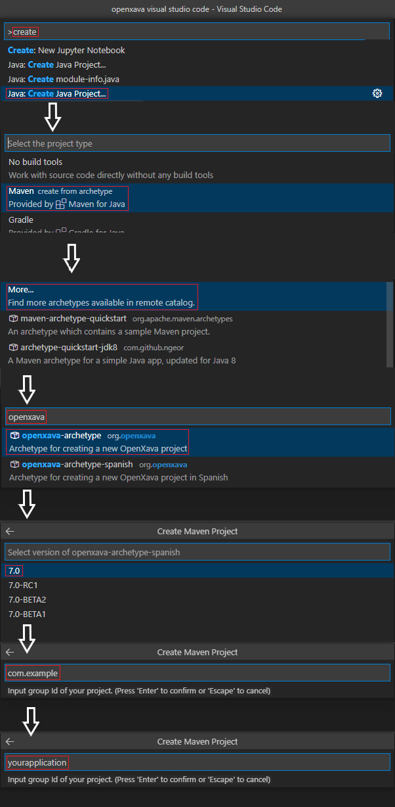

If you haven't yet installed any extensions for Java in Visual Studio Code, you can visit
here and follow the instructions in the section
Install Visual Studio Code for Java.
Create a new Maven project with OpenXava, choosing
org.openxava:openxava-archetype as archetype:

Before running your project at the first time, you have to make an mvn package on it. Then in explorer > Java Projects, run yourapp or find yourapp.java (it's the name of your app) inside the com.example.yourapp.run package in src/main/java, and run it.